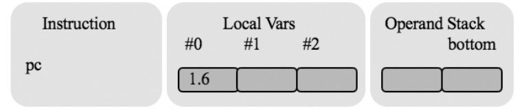
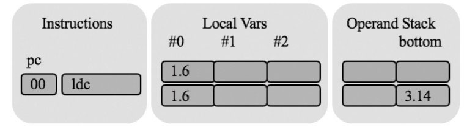
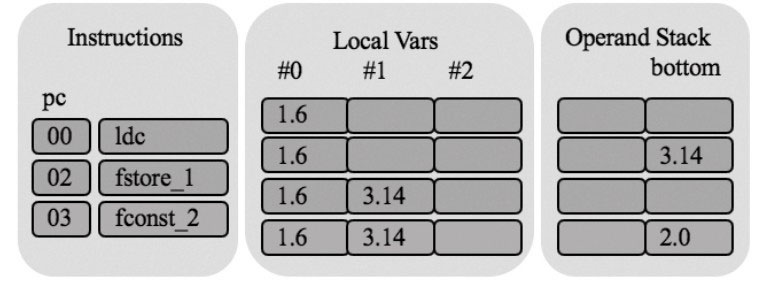
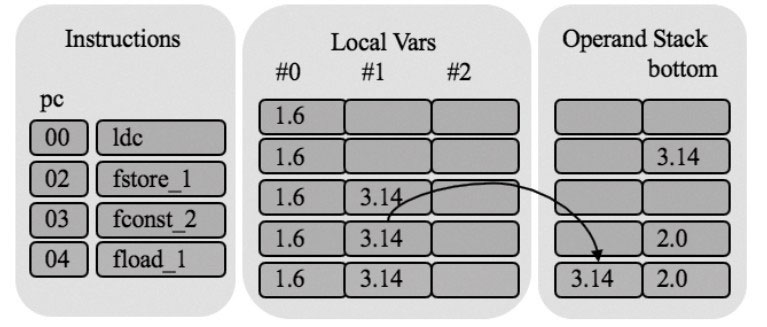
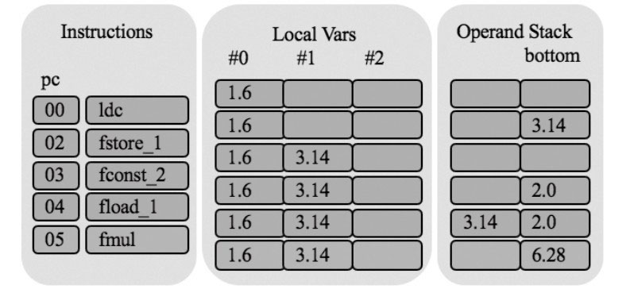
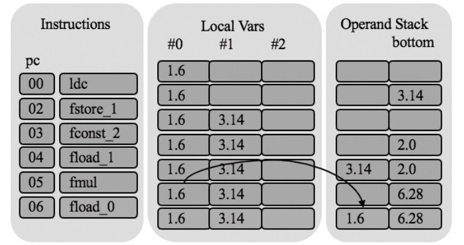
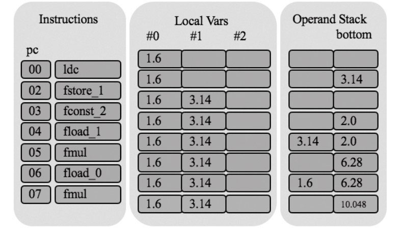
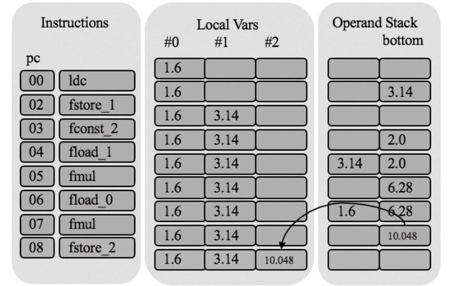
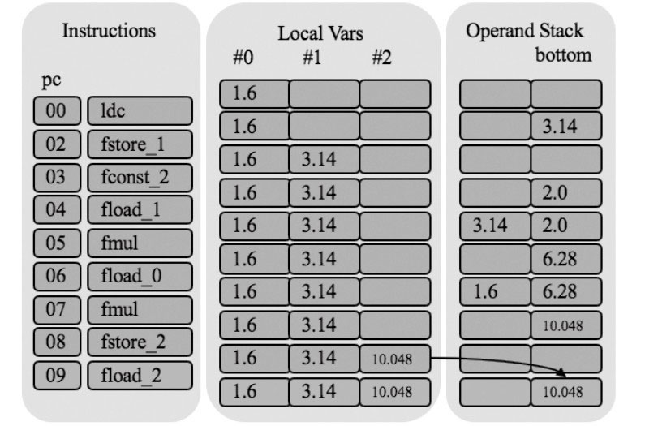
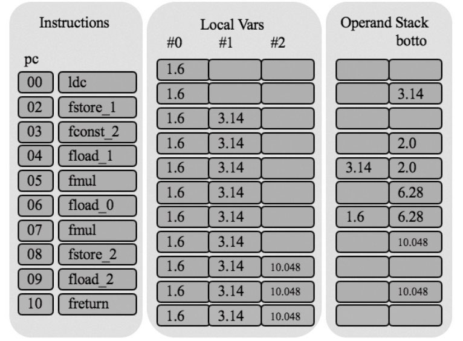

《自己动手写Java虚拟机》- 读后摘要
文章目录
1. 背景介绍
《自己动手写Java虚拟机》一书介绍了如何基于 Go 语言来编写一个 Java 虚拟机。该书对于想通过实践了解 Java 字节码格式、Java 虚拟机实现思路的人有很大的帮助。
在国内 Java 语言有很大的受众，而且试图学习 JVM 的人一般都有较好的 Java 语言基础。另一方面，Go 语言作为一个新生代语言，虽然使用用户没有 Java 那么多，但是逐年流行，而且语言的入门掌握速度很快。因此，从语言上看，这本书不会有较大的理解难度。
不过，推荐在阅读此书之前，先学习 Java 虚拟机的理论知识，参考书籍为：《深入理解Java虚拟机（第3版）》。
如何利用 Go 语言实现 Java 虚拟机，在我看来需要解决如下几个问题：
- 如何实现垃圾回收算法？
- Go 语言如何理解 Java 代码？
- 没有字节码的本地方法如何执行？
- 如何实现 Java 异常机制？
下文阐述一下使用 Go 语言开发一个 Java 虚拟机需要解决的核心问题，内容主要从《自己动手写Java虚拟机》一书中整理得到。
2. 如何实现垃圾回收算法？
Java 语言有两个重要的特点：语言跨平台、垃圾回收。
在所有语言中，对象分配的区域分为两类：栈、堆。栈中分配的内存，随着方法运行结束，会自动被回收，而堆中分配的对象，当对象不再被使用时，我们就需要手动回收该对象的内存，否则会造成内存泄漏。
而《自己动手写Java虚拟机》一书并没有如何设计 GC 的章节，为何？
这是由于书本选择使用 Go 语言来编写 Java 虚拟机，而 Go 语言本身就自带垃圾回收，利用 Go run-time 自带的垃圾回收机制，就能够避免我们手动编写垃圾回收代码。不过，需要注意：为了 Go 语言的垃圾回收机制起到实际作用，要及时将引用变量赋值为 nil。
《自己动手写Java虚拟机》通过取巧的方式地解决了这个问题，避免了复杂的 GC 逻辑，极大降低了 Java 虚拟机的实现难度。
3. Go 语言如何理解 Java 代码？
一个自然的问题：Java 与 Go 是不同的语言，如何在由 Go 语言编写的虚拟机中运行 Java 代码呢？
Java 源代码经过 javac 工具编译后得到的字节码，字节码 ≠ Java 源码，方法已经被翻译为 Java 虚拟机指令集。Java 虚拟机指令集基于局部变量表、操作数栈等数据结构工作。Go 语言编写的 Java 虚拟机并不需要直接理解 Java 源代码，而只需要理解 Java 虚拟机指令集，并且实现局部变量表、操作数栈等数据结构就能够完成运行 Java 代码的能力。
如果我们有一定汇编语言基础，那么理解 Java 虚拟机指令集并不困难。在汇编中，CPU 会按序执行一个个 CPU 指令，而 Java 虚拟机则会按序执行一个个的 Java 虚拟机指令。
举一个书本中的例子，我们有如下的 Java 源代码：
|
|
如上的方法会被 javac 编译器编译为如下字节码：
|
|
下面分析这段字节码的执行过程。circumference() 方法的局部变量表大小是 3（因为涉及三个变量：r、pi 以及 area），操作数栈深度是 2（因为涉及两次乘法）。假设调用方法时，传递给它的参数是 1.6f，方法开始执行前，帧的状态如下图所示。

注意：
- pc：processor count，程序计数器，记录当前操作指令的编号，字节码右侧的代码代表了指令的编号。
- Local Vars：局部变量表
- Operand Stack：操作数栈
第一条指令是 ldc，它把 3.14f 推入栈顶（3.14f 这个数来自常量池），用于准备稍后给 pi 赋初始值，如下图所示：

上面是局部变量表和操作数栈过去的状态，最下面是当前状态。
接着是 fstore_1 指令，它把栈顶的 3.14f 弹出，放到 #1 号局部变量中（对应代码 3.14f 赋值给 pi），如下图所示。

fconst_2 指令把 2.0f 推到栈顶，为乘法计算做准备，如下图所示。

foad_1 指令把 #1 号局部变量 pi 推入栈顶，如下图所示。

fmul 指令执行浮点数乘法。它把栈顶的两个浮点数弹出，相乘，然后把结果推入栈顶，如下图所示。

此时刚好完成了 2 * pi 的计算，下面我们还需要乘以 r。
foad_0 指令把 #0 号局部变量 r 推入栈顶，如下图所示。

fmul 继续乘法计算，如下图所示：

fstore_2 指令把操作数栈顶的 foat 值弹出，放入 #2 号局部变量表，即赋值给 area，如图下所示。

foad_2 指令把 #2 号局部变量推入操作数栈顶，用于稍后的 return 操作，如下图所示。

最后 freturn 指令把操作数栈顶的 foat 变量弹出，返回给方法调用者，如下图所示。

总结一下，Go 语言实现的 Java 虚拟机通过理解字节码中的 Java 虚拟机指令集，基于局部变量表、操作数栈这两种数据结构实现了运行 Java 字节码。事实上，Java 字节码是一种中立语言，独立于 Java 语言，例如 Kotlin、Groovy、JRuby、Jython、Scala 等语言都能够编译为 Java 字节码，并不是只有 Java 源代码能够编译为 Java 字节码。
4. 没有字节码的本地方法如何执行？
上一节说到：Java 源代码会被编译为字节码，Java 源代码中的每一个方法都会被编译为一组 Java 虚拟机指令。因此我们使用 Go 语言实现的 Java 虚拟机只需要理解 Java 虚拟机指令集，不需要理解 Java 源代码，就能够执行 Java 代码。
Java 类库主要用 Java 语言编写，一些无法用 Java 语言实现的方法则使用本地语言编写，这些方法叫作本地方法。 如果你使用 Go 语言编写 Java 虚拟机，Go 语言实现的方法就是一种本地方法。
举一个例子，Object 拥有一个 hashCode 本地方法，定义如下：
|
|
Java 使用者并不需要理解上述方法是如何实现的，因为大多数 Java 开发者并不被要求理解 Java 虚拟机的方方面面。但是我们现在是要编写一个 Java 虚拟机，该如何实现 Java 本地方法的执行逻辑呢？
Java 本地方法并不是由 Java 源代码实现的，因此并没有字节码。对于此，我们需要解决两个问题：
-
本地方法由谁负责实现，如何实现？
在这里，本地方法由 Java 虚拟机负责提供，Go 语言负责实现。
-
本地方法如何执行？
首先，我们需要将实现好的本地方法注册到本地方法表中。然后，在执行本地方法时，通过查表确定 Java 本地方法的具体 Go 语言实现。
下面具体展开。
（1）本地方法与本地方法表
-
本地方法表实际上就是一个 hashmap，其设计成如下数据结构：
1var registry = map[string]NativeMethod{} -
key 为方法的完全限定名，包括类名、方法名以及方法描述符。例如上述 Object.hashCode 方法的 key 可以为
java/lang/Object~hashCode~()I -
value 为 Go 语言实现的具体 hashCode，代码如下：
1 2 3 4 5 6 7// public native int hashCode(); // ()I func hashCode(frame *rtda.Frame) { this := frame.LocalVars().GetThis() hash := int32(uintptr(unsafe.Pointer(this))) frame.OperandStack().PushInt(hash) }这里 hashCode 实现地比较粗暴，就是返回 int32 的地址。这个 return 操作被直接简化为将 hashcode 放到操作数栈顶。
-
最后，需要利用 Go 的 init 方法实现 hashCode 本地方法注册到本地方法表中：
1 2 3 4func init() { native.Register("java/lang/Object", "hashCode", "()I", hashCode) // 省略其他方法 }
（2）本地方法的执行
本地方法的执行是一个查表过程，方法的 native 修饰符能够告知 Java 虚拟机这是一个本地方法，需要基于查表后执行本地方法，而不是基于字节码执行。我们需要用方法的完全限定名进行查表，如果找不到，则抛出 UnsatisfiedLinkError 异常，否则直接调用本地方法。
5. 如何实现 Java 异常机制？
异常处理是 Java 语言提供的一类重要特性，下面是一个例子：
|
|
控制台会打印出如下内容：
|
|
事实上，异常处理属于 Java 虚拟机中既重要，而又复杂的内容。
（1）异常的构造
Java 中的异常都继承于 java.lang.Throwable 类，其无参构造方法定义如下：
|
|
事实上，Throwable 类还有其他构造器，但是无一例外地都调用了 fillInStackTrace 方法。
而 fillInStackTrace 方法则定义如下：
|
|
fillInStackTrace 方法会主动调用 fillInStackTrace 本地方法，后者定义如下：
|
|
fillInStackTrace 是一个本地方法，由 Java 虚拟机负责实现并提供。这是由于虚拟机方法调用栈的信息由 Java 虚拟机维护，Java 代码无权访问。
正如本地方法章节所述，我们需要基于 Go 语言实现的 Java 虚拟机，提供 Go 语言编写的 fillInStackTrace 本地方法，为 Exception 的构造提供方法调用栈信息。
（2）异常的抛出
new Exception("My Exception") Java 代码被 javac 编译为 athrow 指令，负责抛出一个异常。
（3）异常的处理
在 Java 语言中，异常的处理通过 try-catch 语句实现，参考 Java 虚拟机规范的 3.12 节中的一个例子，代码如下：
|
|
上面的方法编译之后，产生下面的字节码：
|
|
那么如果有异常抛出，goto 和 return 之间的指令是如何执行的呢？
答案是查找方法的异常处理表。异常处理表是 Code 属性的一部分，它记录了方法是否有能力处理某种异常。
异常表的数据结构如下：
|
|
正如同代码中 try{} 负责括号内的代码块抛出异常的处理，在异常表中，start_pc 和 end_pc 负责锁定一部分字节码，这部分字节码对应某个可能抛出异常的 try{} 代码块。catch_type 是个索引，通过它可以从运行时常量池中查到一个类符号引用，解析后的类是个异常类，假定这个类是 X。如果位于 start_pc 和 end_pc 之间的指令抛出异常 x，且 x 是 X（或者 X 的子类）的实例，handler_pc 就指出负责异常处理的 catch{} 块在哪里。
异常处理表属于某一个方法，一个方法可以拥有零到多个异常处理表。如果方法 A 的异常处理表无法处理此异常，那么就会继续查询方法 A 调用者的异常处理表。这个过程会一直继续下去，直到找到某个异常处理项，或者到达 Java 虚拟机栈的底部，最终不能够被处理的异常将导致 Java 虚拟机停止运行。
6. 总结
最后，我们再次总结一下背景中提到的几个问题的解决方案：
-
如何实现垃圾回收算法？
《自己动手写Java虚拟机》选择利用 Go 语言运行时的垃圾回收机制避免了我们自己实现一个垃圾回收机制。
-
Go 语言如何理解 Java 代码？
Go 语言不需要理解 Java 代码，只需要理解 Java 字节码。Java 字节码类似于汇编，其与 Java 语言没有绑定关系。
-
没有字节码的本地方法如何执行？
本地方法由 Java 虚拟机实现，Java 虚拟机在初始化时，就会负责将本地方法实现注册到本地方法表中，然后通过查表的方式来执行没有 Java 源代码实现的本地方法。这个过程类似于回调。
-
如何实现 Java 异常机制？
基于 try-catch 机制能够在字节码上注册异常处理表，异常处理表属于某一个方法。当抛出异常时，通过查询异常处理表能够得知该表管理的代码块范围、能够管理的异常类型。如果该方法的异常处理表无法处理异常，则会继续查询其调用方法的异常处理表是否能够处理该类型的异常，这个过程直到 Java 虚拟机栈的底部。最终不能够被处理的异常将导致 Java 虚拟机停止运行。